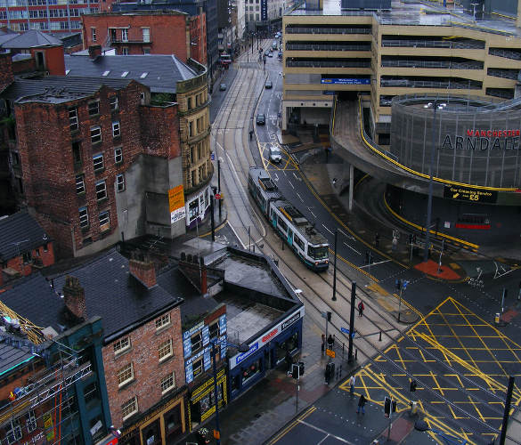

Spatial inclusion for Housing and Communities
2014 — 2015
In the upcoming academic year our 6th yr students are pursuing variety of Design-research projects arising out of direct contact with people affecting or affected by development processes focussed around the issues of spatial inclusion. Our 5th year students are both formally and informally contributing to the development of a housing and communities strategy for Manchester, working with Manchester City Council, local Housing Providers and other partners. We are examining the following three issues and relating detailed / design aspects of these investigations back to a strategic overview across the city.
- Natural urbanism - ‘Naturally Occurring Communities’ and other urban synergies exploring how services and community assets can be better accessed and distributed across the city working with housing trust and regeneration team partners and local residents.
- Accommodating ability - looking into ‘specialist housing’ and adaption to existing housing in terms of densification and diversification of housing stock exploring a range of social and technical issues working with housing trust and accessibility group partners and local residents.
- Living together - looking at new forms of cooperative housing across the city working with co-housing groups and housing trust partners and local residents.
